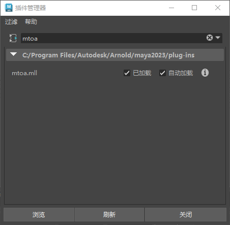
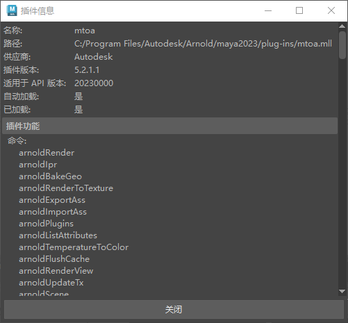
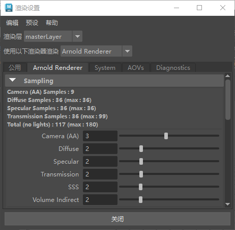

加载插件
安装完成后，请访问“插件管理器”(Plug-in Manager)（“窗口 > 设置/首选项 > 插件管理器”(Window > Settings/Preferences > Plug-in Manager)）来加载 Arnold for Maya。

在 Maya 插件管理器中加载 MtoA 插件
单击“i”（信息）图标可查看与插件有关的各个信息项：

在
渲染设置(Render Settings)
的下拉菜单中选择“Arnold 渲染器”(Arnold Renderer)可开始渲染场景。

父页面:
快速入门